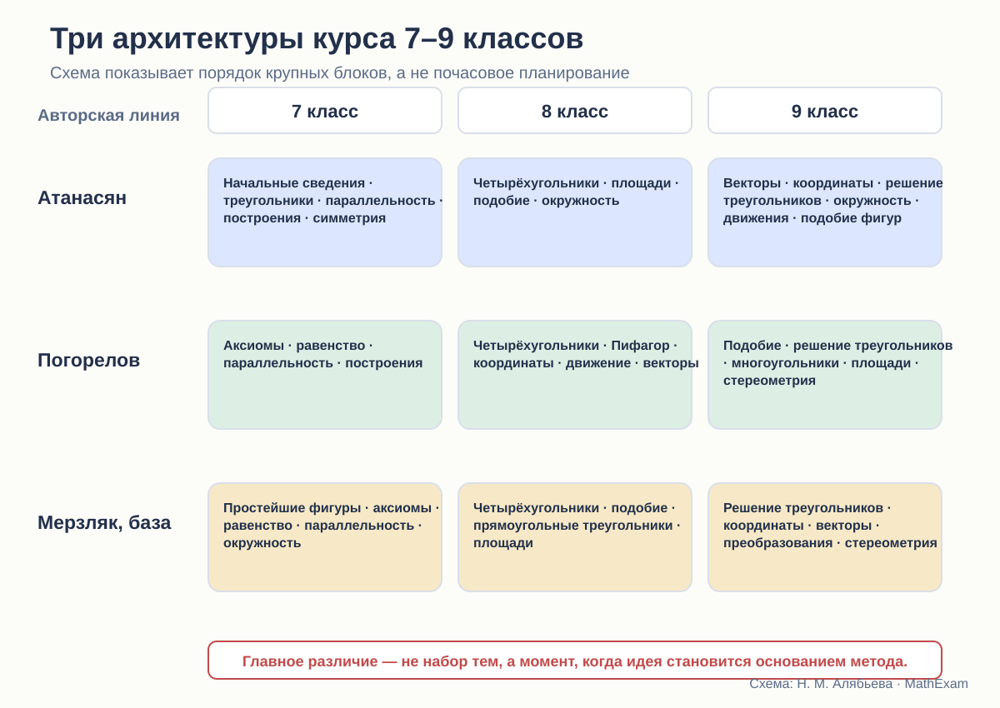

Стройность школьного курса геометрии · статья 10 из 12
Три маршрута через 7–9 классы
Макроструктура курсов Атанасяна, Погорелова и Мерзляка.

Оглавление — это логическая гипотеза автора
Когда автор ставит площади перед подобием или после него, вводит координаты в 8 или 9 классе, помещает движения до векторов или почти в финале курса, он делает не технический выбор.
Он отвечает на вопросы:
- что считать опорной идеей;
- какой уровень абстракции доступен ученику;
- чем доказывать последующие теоремы;
- когда переходить от синтетической геометрии к новым методам;
- какие связи ученик успеет увидеть.
Содержание трёх учебников во многом совпадает. Архитектура — существенно различается.
Атанасян: треугольник как несущая конструкция
Курс Атанасяна развивается по знакомой школьной логике.
7 класс
Начальные сведения о прямой, отрезке, угле и измерении быстро переходят к треугольникам и признакам их равенства. Затем следуют параллельные прямые, соотношения между сторонами и углами треугольника, прямоугольные треугольники, построения, геометрические места точек и симметричные фигуры.
Уже в первый год треугольник становится главным рабочим инструментом. Через равенство треугольников доказываются свойства других фигур и конфигураций.
8 класс
Четырёхугольники, площади, подобные треугольники и окружность образуют классический средний слой курса. Сначала развиваются свойства фигур, затем метрические соотношения и подобие, после чего теория применяется к окружности.
9 класс
Появляются векторы, координатный метод, соотношения между сторонами и углами треугольника, скалярное произведение, длина окружности и площадь круга. После этого вводятся преобразования плоскости, движения и преобразования подобия.
В рассматриваемом издании отдельного блока начальных сведений по стереометрии нет.
Что даёт такой порядок
Курс долго остаётся синтетическим. Ученик успевает привыкнуть доказывать через равенство и подобие треугольников, свойства параллельных прямых и окружности.
Но движения появляются тогда, когда понятие равенства уже много лет используется через наложение. Новая теория скорее переосмысливает прежнюю практику, чем служит её первоначальным основанием.
Координаты и векторы также вводятся после большого массива синтетической геометрии. Это хорошо для формирования классической школы доказательства, но снижает число тем, где новые методы успевают стать привычными.
Погорелов: ранняя аксиоматика и преобразования как каркас
7 класс
Первый большой параграф задаёт основные свойства простейших фигур, включая порядок точек, полуплоскости, откладывание отрезков и углов, существование равного треугольника и параллельность.
Затем идут смежные и вертикальные углы, признаки равенства треугольников, параллельность и сумма углов, геометрические построения и метод геометрических мест.
С самого начала курс строится как дедуктивная система.
8 класс
После четырёхугольников изучаются теорема Пифагора и тригонометрические отношения, затем декартовы координаты, движения и векторы.
Это принципиальный выбор. Преобразования и аналитический язык появляются не в финале, а в середине трёхлетнего курса.
9 класс
Подобие определяется через преобразование подобия. Затем следуют решение треугольников, многоугольники, длина окружности, радианная мера, площади и элементы стереометрии.
Что даёт такой порядок
Погорелов строит более единую систему преобразований:
- в 8 классе движение формализует равенство фигур;
- в 9 классе преобразование подобия становится основанием подобия;
- координаты и векторы уже доступны как дополнительные языки.
Это концептуально стройно. Равенство и подобие оказываются частями общей теории преобразований.
Однако некоторые привычные школьные темы сдвигаются. Площади систематически собираются ближе к концу 9 класса, тогда как в других линиях они активно работают уже в 8-м. Учителю нужно учитывать, что задачная практика и экзаменационные требования могут потребовать более раннего метрического материала.
Мерзляк: модульная и явно организованная линия
7 класс
Простейшие фигуры, измерение, смежные и вертикальные углы, отдельный разговор об аксиомах, равенство треугольников, параллельные прямые, сумма углов, окружность и построения.
Старт сочетает привычный наглядный материал с попыткой явно объяснить устройство теории.
8 класс
Четырёхугольники, подобные треугольники, решение прямоугольных треугольников, многоугольники и площади.
В отличие от Атанасяна подобие появляется до большого метрического блока. Это позволяет использовать его для вывода и решения ряда задач.
9 класс
Решение произвольных треугольников, правильные многоугольники, декартовы координаты, векторы, геометрические преобразования и начальные сведения по стереометрии.
Главы имеют заметные входы, итоги, тестовые задания и дополнительные рубрики. Архитектура ощущается как последовательность учебных модулей.
Что даёт такой порядок
Мерзляк удобен для поэтапного освоения и контроля. Каждый год имеет относительно самостоятельную структуру.
Движения, как и у Атанасяна, формализуются поздно. Зато глава о преобразованиях в 9 классе включает параллельный перенос, осевую и центральную симметрию, поворот, гомотетию и подобие фигур — то есть собирает несколько разрозненных идей в один блок.
Координаты и векторы идут подряд, что облегчает переход между аналитическим и векторным языком.
Пять ключевых расхождений
1. Когда появляется аксиоматический каркас
- Погорелов строит его сразу.
- Мерзляк сначала показывает несколько доказательств, затем объясняет необходимость аксиом.
- Атанасян вводит правила менее отдельным блоком, опираясь на знакомые действия и свойства.
Это влияет на весь стиль курса: от явной дедукции до постепенного перехода.
2. Когда формализуется движение
- Погорелов — в 8 классе.
- Атанасян — в конце 9 класса.
- Мерзляк — в 9 классе.
Поэтому у Погорелова движение успевает стать методом, а в двух других линиях прежде всего закрывает и обобщает прежние представления.
3. Когда изучается подобие
- Атанасян и Мерзляк — в 8 классе как важный инструмент.
- Погорелов — в 9 классе после движений, через преобразование подобия.
Первый вариант раньше даёт мощный задачный метод. Второй сильнее связывает понятие с общей теорией преобразований.
4. Когда вводятся координаты
- Погорелов — в 8 классе.
- Атанасян и Мерзляк — в 9 классе.
Раннее введение увеличивает время на освоение аналитического метода. Позднее сохраняет более долгий синтетический этап.
5. Есть ли стереометрическое продолжение
В рассматриваемых изданиях Погорелова и Мерзляка есть начальные сведения по стереометрии. В выбранном издании Атанасяна 2023 года отдельной главы по стереометрии нет.
Это не делает один курс автоматически полнее другого: объём учебного времени ограничен. Но переход к геометрии 10 класса получается разным.
Различие не только в годах, но и в связях
Можно поставить две темы рядом и всё равно не связать их.
Например, движения могут быть изучены отдельным параграфом, после которого ученик решает несколько задач на перенос и симметрию, а затем больше к ним не возвращается.
Настоящая интеграция проявляется, когда:
- движение объясняет равенство фигур;
- симметрия используется в доказательстве;
- координаты дают альтернативный способ решения;
- векторный метод возвращается в задачах на окружность или многоугольники;
- подобие связывается с гомотетией;
- стереометрические модели опираются на уже известные плоские свойства.
По этому критерию Погорелов наиболее последовательно превращает движения и преобразования в часть теоретического каркаса. Мерзляк сильнее организует переходы внутри модулей. Атанасян сохраняет устойчивую линию синтетической геометрии и позднее добавляет новые языки.
Какой порядок тем оптимален
Единственного ответа нет. Нужно выбрать приоритет.
Если главное — ранняя дедуктивная система
Ближе маршрут Погорелова.
Если главное — классическая школьная практика и постепенное усложнение
Ближе Атанасян.
Если важны учебная навигация и модульность
Сильнее выглядит Мерзляк.
Но новый курс не обязан повторять один из маршрутов.
Я бы предложила:
- в 7 классе — явный, но небольшой аксиоматический договор;
- равенство треугольников — с наглядной идеей и строгим основанием;
- раннее введение симметрий как методов, а не только красивых фигур;
- подобие в 8 классе;
- координаты — в конце 8 класса, чтобы они успели работать;
- движения — не изолированной главой, а сквозной линией;
- векторы — после координат, с постоянным сравнением методов;
- короткий, но содержательный мост к стереометрии.
Что показывает макроаудит
Атанасян, Погорелов и Мерзляк предлагают не три оформления одной программы, а три разные концепции.
Атанасян строит курс вокруг классической синтетической геометрии треугольника.
Погорелов строит дедуктивную систему, в которой преобразования постепенно становятся объединяющим языком.
Мерзляк организует материал как последовательность чётко размеченных модулей с развитой задачной навигацией.
Выбор учебника поэтому определяет не только порядок параграфов. Он определяет, какой образ геометрии получит ученик: набор классических теорем, строгую систему преобразований или хорошо организованную учебную траекторию.
Какие издания сравниваются
- Л. С. Атанасян и др. «Математика. Геометрия. 7–9 классы. Базовый уровень». В работе использовано 14-е переработанное издание 2023 года.
- А. В. Погорелов. «Геометрия. 7–9 классы». В работе использовано 11-е стереотипное издание 2022 года.
- А. Г. Мерзляк, В. Б. Полонский, М. С. Якир. «Геометрия. 7, 8, 9 классы». Сравнивается базовая линия.
Ссылки ведут на официальные страницы издательства. Фрагменты страниц приведены в объёме, необходимом для методического и критического анализа; права на учебники и их оформление принадлежат авторам и издательствам.